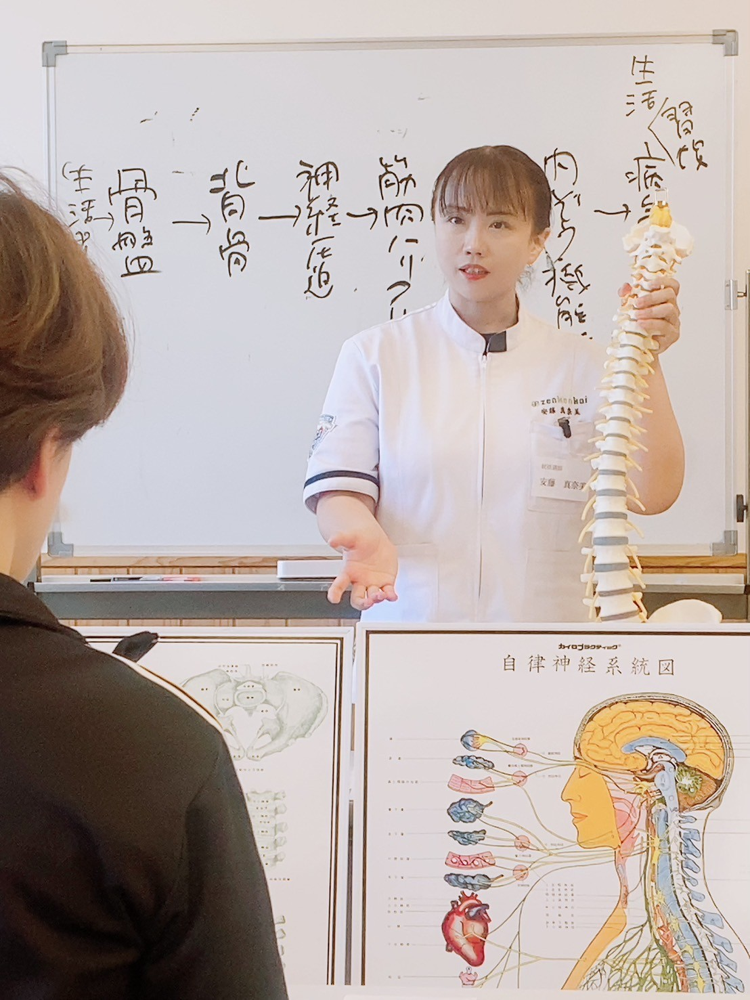
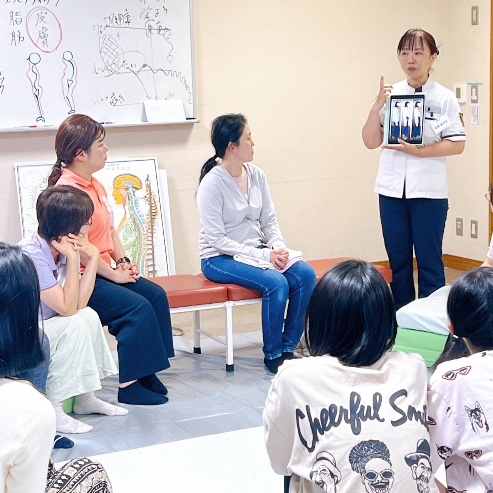
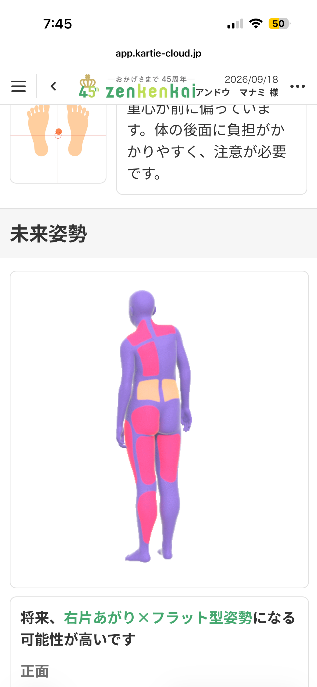
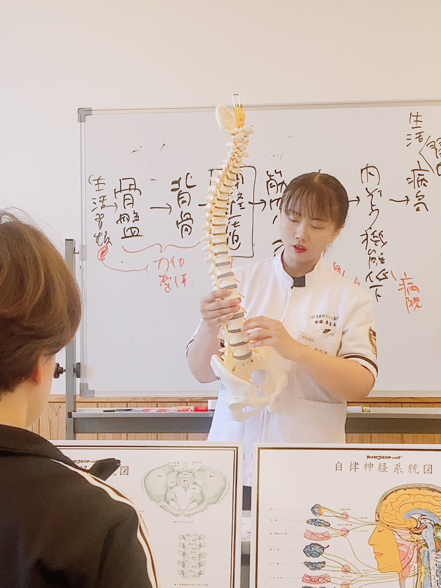
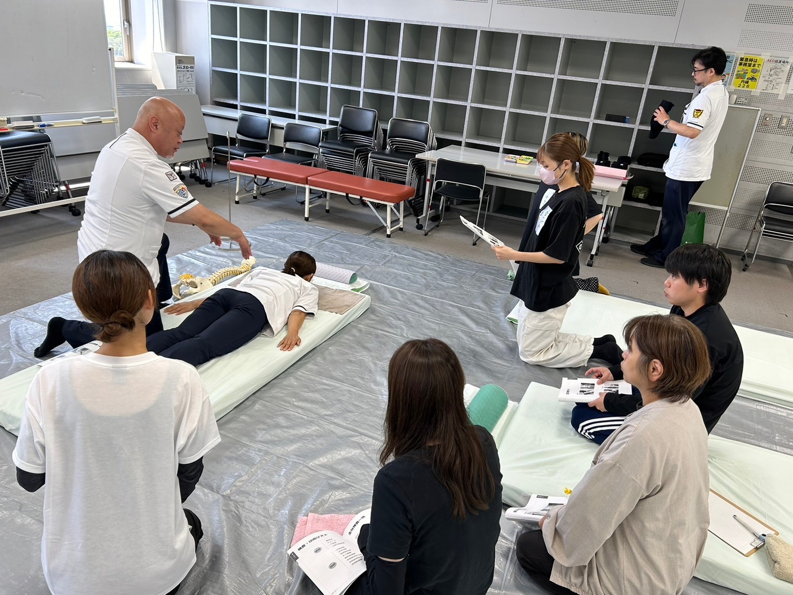
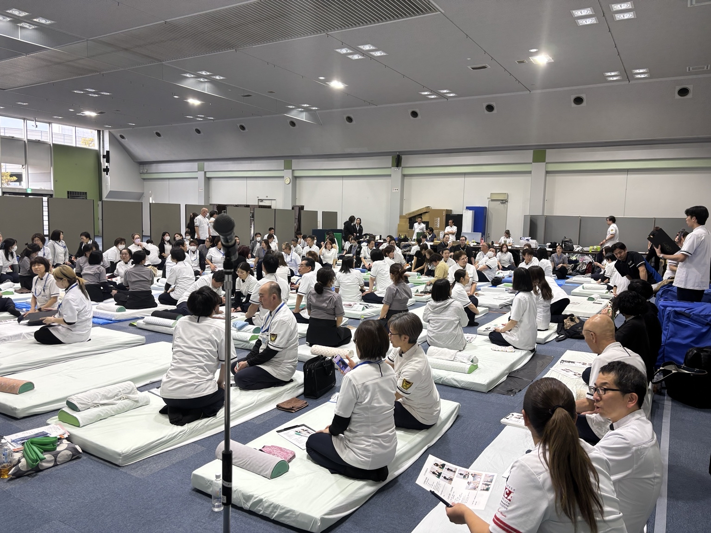
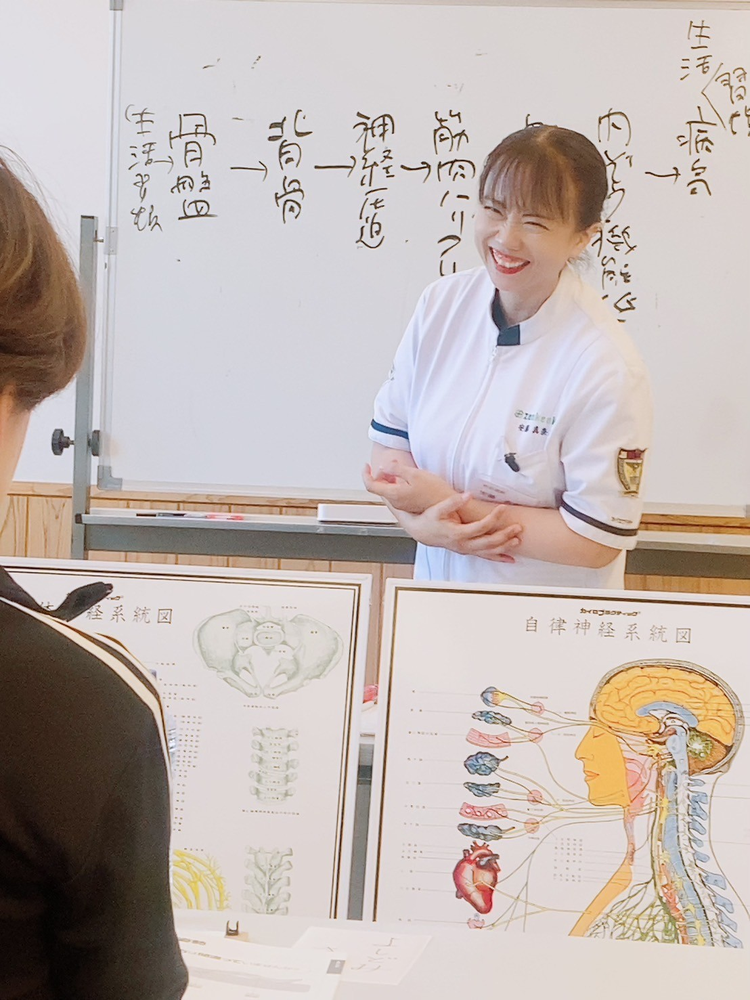

5つの質問に答えるだけ。あなたの姿勢のクセがわかります。
いちばん近いものを選んでください。
なぜこうなるのか、家でできるセルフチェック法と一緒に、LINEで詳しい解説をお届けします。
売り込みはしません｜ブロックはいつでもOK
※医療的な診断ではなく、姿勢の傾向を知るためのものです。無料姿勢講座では、AI姿勢分析「シセイカルテ」で実際の姿勢を数値で確かめられます。
家族が腰や肩をつらそうにしている。
私にも何かできないかな。
姿勢や骨盤は、身体とどう関係しているんだろう。
自分や家族のために、身体のことを学んでみたい。
その「知りたい」が、最初の一歩です。

自分の姿勢を確認しながら、骨盤や背骨が身体とどう関係しているのかを、わかりやすく学びます。
正面と横から撮影し、あなたの姿勢の傾きやゆがみを数値で見える化。姿勢タイプ診断の結果を、実際の数値で確かめられます。

診断結果はその場で一緒に確認します身体の知識がなくても大丈夫。知るほどに、身体はおもしろくなります。
学び始めた理由も、今の働き方もさまざまです。
病気がちな母に何かしてあげたいと思い受講。今はマンションの一室で施術院を開き、活動しています。
奈良県手に職をつけ、子どもとの時間を増やしたいと思い受講。現在は共同施術院で仕事をしています。
徳島県家族や知人を看ることから始め、今は夫婦で2店舗の施術院を運営しています。
兵庫県
私はもともと一級建築士でした。生まれつき両足の股関節に問題があり、幼稚園に入る前までに5回の手術を経験しています。
カイロを学び始めたのは、最初は自分と家族の身体のためでした。学ぶうちに「身体って、おもしろい」と感じるようになり、知ることが楽しくなっていきました。
「ありがとう」と喜んでもらえることが増え、気づけば好きで学んでいたことが仕事になっていました。
現在は福津市で開院12年。今度は私が、学んでみたいと思った方の一歩をお手伝いしています。

無料講座に参加したからといって、次の講座を受講する必要はありません。
Zenkenkaiは、1977年の創業以来、全国でカイロプラクティックの普及と人材育成に取り組んできた、日本最大級のカイロプラクティック団体です。

さらに深く学びたい方が進む「初級カイロ事業セミナー」は、Zenkenkaiが主催しています。無料姿勢講座はレディースカイロうららが主催し、初級カイロ事業セミナーはZenkenkaiが主催という関係です。無料講座では、セミナーの内容や費用、その後の活動についても詳しくご説明します。
学んだ知識や技術を、仕事や収入につなげる道もあります。
まずは、自分の身体を知ることから。学んだことが家族に役立ち、誰かに喜ばれ、その経験を仕事にする道もあります。
最初から、仕事にすると決めなくても大丈夫です。

売り込みはしません｜ブロックはいつでもOK